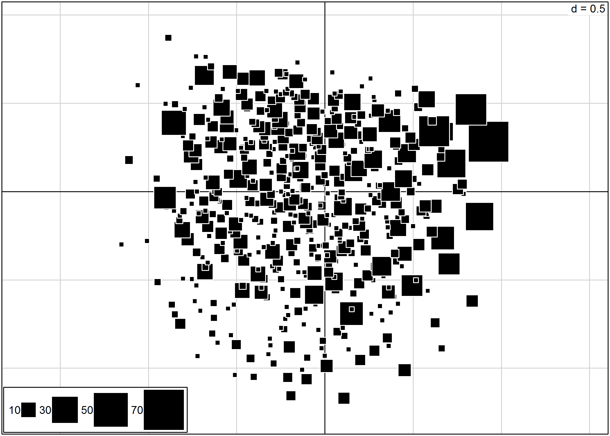
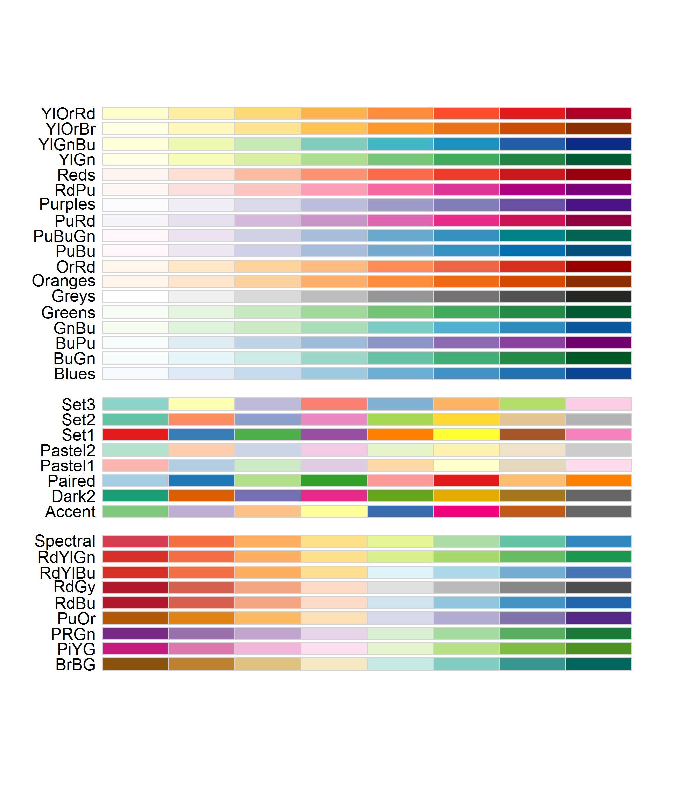

Analyse des correspondances multiples (ACM)
Il existe plusieurs techniques d’analyse factorielle dont les plus courantes sont l’analyse en composante principale (ACP) portant sur des variables quantitatives, l’analyse factorielle des correspondances (AFC) portant sur deux variables qualitatives et l’analyse des correspondances multiples (ACM) portant sur plusieurs variables qualitatives (il s’agit d’une extension de l’AFC). Pour combiner des variables à la fois quantitatives et qualitatives, on pourra avoir recours à l’analyse mixte de Hill et Smith.
Bien que ces techniques soient disponibles dans les extensions standards de R, il est souvent préférable d’avoir recours à deux autres extensions plus complètes, ade4 et FactoMineR, chacune ayant ses avantages et des possibilités différentes. Voici les fonctions les plus fréquentes :
| Analyse | Variables | Fonction standard | Fonction ade4 | Fonctions FactoMineR |
|---|---|---|---|---|
| ACP | plusieurs variables quantitatives | princomp |
dudi.pca |
PCA |
| AFC | deux variables qualitatives | corresp |
dudi.coa |
CA |
| ACM | plusieurs variables qualitatives | mca |
dudi.acm |
MCA |
| Analyse mixte de Hill et Smith | plusieurs variables quantitatives et/ou qualitatives | — | dudi.mix |
— |
Dans la suite de ce chapitre, nous n’arboderons que l’analyse des correspondances multiples (ACM).
Principe général
L’analyse des correspondances multiples est une technique descriptive visant à résumer l’information contenu dans un grand nombre de variables afin de faciliter l’interprétention des corrélations existantes entre ces différentes variables. On cherche à savoir quelles sont les modalités corrélées entre elles.
L’idée générale est la suivante1. L’ensemble des individus peut être représenté dans un espace à plusieurs dimensions où chaque axe représente les différentes variables utilisées pour décrire chaque individu. Plus précisément, pour chaque variable qualitative, il y a autant d’axes que de modalités moins un. Ainsi il faut trois axes pour décrire une variable à quatre modalités. Un tel nuage de points est aussi difficile à interpréter que de lire directement le fichier de données. On ne voit pas es corrélations qu’il peut y avoir entre modalités, par exemple qu’aller au cinéma est plus fréquent chez les personnes habitant en milieu urbain. Afin de mieux représenter ce nuage de points, on va procéder à un changement de systèmes de coordonnées. Les individus seront dès lors projetés et représentés sur un nouveau système d’axe. Ce nouveau système d’axes est choisis de telle manière que la majorité des variations soit concentrées sur les premiers axes. Les deux-trois premiers axes permettront d’expliquer la majorité des différences observées dans l’échantillon, les autres axes n’apportant qu’une faible part additionnelle d’information. Dès lors, l’analyse pourra se concentrer sur ses premiers axes qui constitueront un bon résumé des variations observables dans l’échantillon.
Avant toute ACM, il est indispensable de réaliser une analyse préliminaire de chaque variable, afin de voir si toutes les classes sont aussi bien représentées ou s’il existe un déséquilibre. L’ACM est sensible aux effectifs faibles, aussi regrouper les classes quand cela est nécessaire.
ACM avec ade4
Si l’extension ade4 n’est pas présente sur votre PC, il vous faut l’installer :
install.packages("ade4", dep = TRUE)Dans tous les cas, il faut penser à la charger en mémoire :
library(ade4)Comme précédemment, nous utiliserons le fichier de données hdv2003 fourni avec l’extension questionr.
library(questionr)
data(hdv2003)
d <- hdv2003En premier lieu, comme dans le chapitre sur la régression logistique, nous allons créer une variable groupe d’âges et regrouper les modalités de la variable « niveau d’étude ».
d$grpage <- cut(d$age, c(16, 25, 45, 65, 93), right = FALSE, include.lowest = TRUE)
d$etud <- d$nivetud
levels(d$etud) <- c("Primaire", "Primaire", "Primaire", "Secondaire", "Secondaire",
"Technique/Professionnel", "Technique/Professionnel", "Supérieur"Ensuite, nous allons créer un tableau de données ne contenant que les variables que nous souhaitons prendre en compte pour notre analyse factorielle.
d2 <- d[, c("grpage", "sexe", "etud", "peche.chasse", "cinema", "cuisine", "bricol",
"sport", "lecture.bd")]Le calcul de l’ACM se fait tout simplement avec la fonction dudi.acm{data-package=“ade4”>.
acm <- dudi.acm(d2)Par défaut, la fonction affichera le graphique des valeurs propres de chaque axe (nous y reviendrons) et vous demandera le nombre d’axes que vous souhaitez conserver dans les résultats. Le plus souvent, cinq axes seront largement plus que suffisants. Vous pouvez également éviter cette étape en indiquant directement à dudi.acm de vous renvoyer les cinq premiers axes ainsi :
acm <- dudi.acm(d2, scannf = FALSE, nf = 5)Le graphique des valeurs propres peut être reproduit avec screeplot :
screeplot(acm)
Les mêmes valeurs pour les premiers axes s’obtiennent également avec summary2 :
summary(acm)Class: acm dudi
Call: dudi.acm(df = d2, scannf = FALSE, nf = 5)
Total inertia: 1.451
Eigenvalues:
Ax1 Ax2 Ax3 Ax4 Ax5
0.2474 0.1672 0.1309 0.1263 0.1176
Projected inertia (%):
Ax1 Ax2 Ax3 Ax4 Ax5
17.055 11.525 9.022 8.705 8.109
Cumulative projected inertia (%):
Ax1 Ax1:2 Ax1:3 Ax1:4 Ax1:5
17.06 28.58 37.60 46.31 54.42
(Only 5 dimensions (out of 15) are shown)L’inertie totale est de 1,451 et l’axe 1 en explique 0,1474 soit 17 %. L’inertie projetée cumulée nous indique que les deux premiers axes expliquent à eux seuls 29 % des variations observées dans notre échantillon.
Pour comprendre la signification des différents axes, il importe d’identifier quelles sont les variables/ modalités qui contribuent le plus à chaque axe. Une première représentation graphique est le cercle de corrélation des modalités. Pour cela, on aura recours à s.corcicle. On indiquera d’abord acm$co si l’on souhaite représenter les modalités ou acm$li si l’on souhaite représenter les individus. Les deux chiffres suivant indiquent les deux axes que l’on souhaite afficher (dans le cas présent les deux premiers axes). Enfin, le paramètre clabel permet de modifier la taille des étiquettes.
s.corcircle(acm$co, 1, 2, clabel = 0.7)On pourra avoir également recours à boxplot pour visualiser comment se répartissent les modalités de chaque variable sur un axe donné3.
boxplot(acm)boxplot(acm, 2)Le tableau acm$cr contient les rapports de corrélation (variant de 0 à 1) entre les variables et les axes choisis au départ de l’ACM. Pour représenter graphiquement ces rapports, utiliser la fonction barplot ainsi : barplot(acm$cr[,num],names.arg=row.names( acm$cr),las=2) où num est le numéro de l’axe à représenter. Pour l’interprétation des axes, se concentrer sur les variables les plus structurantes, c’est-à-dire dont le rapport de corrélation est le plus proche de 1.
par(mfrow = c(2, 2))
for (i in 1:4) barplot(acm$cr[, i], names.arg = row.names(acm$cr), las = 2,
main = paste("Axe", i))
par(mfrow = c(1, 1))Le paramètre mfrow de la fonction par permet d’indiquer à R que l’on souhaite afficher plusieurs graphiques sur une seule et même fenêtre, plus précisément que l’on souhaite diviser la fenêtre en deux lignes et deux colonnes.
c(1, 1) (un seul graphique par fenêtre) pour ne pas affecter les prochains graphiques que nous allons produire.
Pour représenter, les modalités dans le plan factoriel, on utilisera la fonction s.label. Par défaut, les deux premiers axes sont représentés.
s.label(acm$co, clabel = 0.7)Il est bien sur possible de préciser les axes à représenter. L’argument boxes permet quant à lui d’indiquer si l’on souhaite tracer une boîte pour chaque modalité.
s.label(acm$co, 3, 4, clabel = 0.7, boxes = FALSE)Bien entendu, on peut également représenter les individus. En indiquant clabel=0 (une taille nulle pour les étiquettes), s.label remplace chaque observation par un symbole qui peut être spécifié avec pch4.
s.label(acm$li, clabel = 0, pch = 17)Lorsque l’on réalise une ACM, il n’est pas rare que plusieurs observations soient identiques, c’est-à-dire correspondent à la même combinaison de modalités. Dès lors, ces observations seront projetées sur le même point dans le plan factoriel. Une représentation classique des observations avec s.label ne permettra pas de rendre compte les effectifs de chaque point.
Le package JLutils, disponible seulement sur GitHub propose une petite fonction s.freq représentant chaque point par un carré proportionnel au nombre d’individus.
Pour installer JLutils, on aura recours au package devtools et à sa fonction install_github :
library(devtools)
install_github("larmarange/JLutils")La fonction s.freq s’emploie de manière similaire aux autres fonctions graphiques de ade4. Le paramètre csize permet d’ajuster la taille des carrés.
library(JLutils)
s.freq(acm$li)
L’interprétation est tout autre, non ?La fonction s.value permet notamment de représenter un troisième axe factoriel. Dans l’exemple ci-après, nous projettons les individus selon les deux premiers axes factoriels. La taille et la couleur des carrés dépendent pour leur part de la coordonnée des individus sur le troisième axe factoriel. Le paramètre csi permet d’ajuster la taille des carrés.
s.value(acm$li, acm$li[, 3], 1, 2, csi = 0.5)
s.arrow permet de représenter les vecteurs variables ou les vecteurs individus sous la forme d’une flèche allant de l’origine du plan factoriel aux coordonnées des variables/individus :
s.arrow(acm$co, clabel = 0.7)s.hist permet de représenter des individus (ou des modalités) sur le plan factoriel et d’afficher leur distribution sur chaque axe :
s.hist(acm$li, clabel = 0, pch = 15)s.class et s.chull permettent de représenter les différentes observations classées en plusieurs catégories. Cela permet notamment de projeter certaines variables.
s.class représente les observations par des points, lie chaque observation au barycentre de la modalité à laquelle elle appartient et dessine une ellipse représentant la forme générale du nuage de points :
library(RColorBrewer)
s.class(acm$li, d2$sexe, col = brewer.pal(4, "Set1"))s.chull représente les barycentres de chaque catégorie et dessine des lignes de niveaux représentant la distribution des individus de cette catégorie. Les individus ne sont pas directement représentés :
s.chull(acm$li, d2$sexe, col = brewer.pal(4, "Set1"))Il est préférable de fournir une liste de couleurs (via le paramètre col) pour rendre le graphique plus lisible. Si vous avez installé l’extension RColorBrewer, vous pouvez utiliser les différentes palettes de couleurs proposées. Pour afficher les palettes disponibles, utilisez display.brewer.all.
library(RColorBrewer)
display.brewer.all(8)
Pour obtenir une palette de couleurs, utilisez la fonction brewer.pal avec les arguments n (nombre de couleurs demandées) et pal(nom de la palette de couleurs désirée).
La variable catégorielle transmise à s.class ou s.chull n’est pas obligatoirement une des variables retenues pour l’ACM. Il est tout à fait possible d’utiliser une autre variable. Par exemple :
s.class(acm$li, d$trav.imp, col = brewer.pal(4, "Set1"))Les fonctions scatter et biplot sont équivalentes : elles appliquent s.class à chaque variable utilisée pour l’ACM.
scatter(acm, col = brewer.pal(4, "Set1"))ACM avec FactoMineR
Comme avec ade4, il est nécessaire de préparer les données au préalable (voir section précédente).
L’ACM se calcule avec la fonction MCA, l’argument ncp permettant de choisir le nombre d’axes à retenir :
library(FactoMineR)acm2 <- MCA(d2, ncp = 5, graph = FALSE)
acm2**Results of the Multiple Correspondence Analysis (MCA)**
The analysis was performed on 2000 individuals, described by 9 variables
*The results are available in the following objects:
name description
1 "$eig" "eigenvalues"
2 "$var" "results for the variables"
3 "$var$coord" "coord. of the categories"
4 "$var$cos2" "cos2 for the categories"
5 "$var$contrib" "contributions of the categories"
6 "$var$v.test" "v-test for the categories"
7 "$ind" "results for the individuals"
8 "$ind$coord" "coord. for the individuals"
9 "$ind$cos2" "cos2 for the individuals"
10 "$ind$contrib" "contributions of the individuals"
11 "$call" "intermediate results"
12 "$call$marge.col" "weights of columns"
13 "$call$marge.li" "weights of rows" acm2$eig eigenvalue percentage of variance cumulative percentage of variance
dim 1 0.25757489 15.454493 15.45449
dim 2 0.18363502 11.018101 26.47259
dim 3 0.16164626 9.698776 36.17137
dim 4 0.12871623 7.722974 43.89434
dim 5 0.12135737 7.281442 51.17579
dim 6 0.11213331 6.727999 57.90378
dim 7 0.10959377 6.575626 64.47941
dim 8 0.10340564 6.204338 70.68375
dim 9 0.09867478 5.920487 76.60424
dim 10 0.09192693 5.515616 82.11985
dim 11 0.07501208 4.500725 86.62058
dim 12 0.06679676 4.007805 90.62838
dim 13 0.06002063 3.601238 94.22962
dim 14 0.05832024 3.499215 97.72883
dim 15 0.03785276 2.271166 100.00000sum(acm2$eig$eigenvalue)[1] 1.666667En premier lieu, il apparait que l’inertie totale obtenue avec MCA est différente de celle observée avec dudi.acm{data-package=“ade4”>. Cela est dû à un traitement différents des valeurs manquantes. Alors que dudi.acm exclu les valeurs manquantes, MCA les considèrent, par défaut, comme une modalité additionnelle. Pour calculer l’ACM uniquement sur les individus n’ayant pas de valeur manquante, on aura recours à complete.cases :
acm2 <- MCA(d2[complete.cases(d2), ], ncp = 5, graph = FALSE)
acm2$eig eigenvalue percentage of variance cumulative percentage of variance
dim 1 0.24790700 17.162792 17.16279
dim 2 0.16758465 11.602014 28.76481
dim 3 0.13042357 9.029324 37.79413
dim 4 0.12595105 8.719688 46.51382
dim 5 0.11338629 7.849820 54.36364
dim 6 0.10976674 7.599236 61.96287
dim 7 0.10060204 6.964757 68.92763
dim 8 0.09802387 6.786268 75.71390
dim 9 0.09283131 6.426783 82.14068
dim 10 0.07673502 5.312425 87.45311
dim 11 0.06609694 4.575942 92.02905
dim 12 0.05950655 4.119684 96.14873
dim 13 0.05562942 3.851267 100.00000sum(acm2$eig$eigenvalue)[1] 1.444444Les possibilités graphiques de FactoMineR sont différentes de celles de ade4. Un recours à la fonction plot affichera par défaut les individus, les modalités et les variables. La commande ?plot.MCA permet d’accéder au fichier d’aide de cette fonction (i.e. de la méthode générique plot appliquée aux objets de type MCA) et de voir toutes les options graphiques. L’argument choix permet de spécifier ce que l’on souhaite afficher (« ind » pour les individus et les catégories, « var » pour les variables). L’argument invisible quant à lui permet de spécifier ce que l’on souhaite masquer. Les axes à afficher se précisent avec axes. Voir les exemples ci-dessous.
plot(acm2)
plot(acm2, axes = c(3, 4))plot(acm2, choix = "ind")
plot(acm2, choix = "ind", invisible = "ind")plot(acm2, choix = "var")La fonction plotellipses trace des ellipses de confiance atour des modalités de variables qualitatives. L’objectif est de voir si les modalités d’une variable qualitative sont significativement différentes les unes des autres.
Par défaut (means=TRUE), les ellipses de confiance sont calculées pour les coordonnées moyennes de chaque catégorie.
plotellipses(acm2)L’option means=FALSE calculera les ellipses de confiance pour l’ensemble des coordonnées des observations relevant de chaque catégorie.
plotellipses(acm2, means = FALSE)La fonction dimdesc aide à décrire et interpréter les dimensions de l’ACM. Cette fonction est très utile quand le nombre de variables est élevé. Elle permet de voir à quelles variables les axes sont le plus liés : quelles variables et quelles modalités décrivent le mieux chaque axe ?
Pour les variables qualitatives, un modèle d’analyse de variance à un facteur est réalisé pour chaque dimension ; les variables à expliquer sont les coordonnées des individus et la variable explicative est une des variables qualitatives. Un test F permet de voir si la variable a un effet significatif sur la dimension et des tests T sont réalisés modalité par modalité (avec le contraste somme des alpha_i=0). Cela montre si les coordonnées des individus de la sous-population définie par une modalité sont significativement différentes de celles de l’ensemble de la population (i.e. différentes de 0). Les variables et modalités sont triées par probabilité critique et seules celles qui sont significatives sont gardées dans le résultat.
dimdesc(acm2, axes = 1:2)$`Dim 1`
$`Dim 1`$quali
R2 p.value
etud 0.586058164 0.000000e+00
grpage 0.512231318 1.008479e-292
cinema 0.471002163 8.339548e-263
sport 0.398103140 5.940105e-210
bricol 0.179188677 7.142716e-83
cuisine 0.048233515 4.941749e-22
lecture.bd 0.017667936 6.856650e-09
sexe 0.013670717 3.546801e-07
peche.chasse 0.005007337 2.105728e-03
$`Dim 1`$category
Estimate p.value
cinema_Oui 0.35033716 8.339548e-263
sport_Oui 0.33199860 5.940105e-210
[25,45) 0.33895697 1.959716e-159
Supérieur 0.45630756 1.376719e-118
bricol_Oui 0.21255190 7.142716e-83
Technique/Professionnel 0.17291856 4.703868e-23
cuisine_Oui 0.11015793 4.941749e-22
[16,25) 0.39553122 3.635181e-15
lecture.bd_Oui 0.22169306 6.856650e-09
Homme 0.05853263 3.546801e-07
peche.chasse_Oui 0.05543091 2.105728e-03
peche.chasse_Non -0.05543091 2.105728e-03
Femme -0.05853263 3.546801e-07
lecture.bd_Non -0.22169306 6.856650e-09
[45,65) -0.13173232 2.477610e-12
cuisine_Non -0.11015793 4.941749e-22
bricol_Non -0.21255190 7.142716e-83
[65,93] -0.60275587 2.906563e-165
sport_Non -0.33199860 5.940105e-210
cinema_Non -0.35033716 8.339548e-263
Primaire -0.59465967 5.269497e-268
$`Dim 2`
$`Dim 2`$quali
R2 p.value
sexe 0.62723828 0.000000e+00
peche.chasse 0.31109226 1.161746e-154
bricol 0.20276579 8.014713e-95
etud 0.13925513 6.754592e-61
cuisine 0.12908453 1.461380e-58
cinema 0.04039994 1.215838e-18
grpage 0.03776900 1.257795e-15
lecture.bd 0.01995653 7.190474e-10
$`Dim 2`$category
Estimate p.value
Homme 0.32598031 0.000000e+00
peche.chasse_Oui 0.35922450 1.161746e-154
bricol_Oui 0.18590016 8.014713e-95
cuisine_Non 0.14816688 1.461380e-58
Technique/Professionnel 0.23013181 5.919911e-54
cinema_Non 0.08436024 1.215838e-18
[45,65) 0.11638978 3.028836e-17
lecture.bd_Non 0.19371997 7.190474e-10
[65,93] -0.02872480 1.229757e-02
[25,45) -0.05570792 2.294799e-09
lecture.bd_Oui -0.19371997 7.190474e-10
Secondaire -0.09715846 1.240732e-10
cinema_Oui -0.08436024 1.215838e-18
Supérieur -0.14813997 6.942611e-24
cuisine_Oui -0.14816688 1.461380e-58
bricol_Non -0.18590016 8.014713e-95
peche.chasse_Non -0.35922450 1.161746e-154
Femme -0.32598031 0.000000e+00Pour une présentation plus détaillée, voir http://www.math.univ-toulouse.fr/~baccini/zpedago/asdm.pdf.↩
On pourra également avoir recours à la fonction
inertia.dudipour l’ensemble des axes.↩La fonction
scoreconstituera également une aide à l’interprétation des axes.↩Voir le chapitre sur les graphiques pour la liste des différents symboles utilisables. (MAJ LIEN)↩